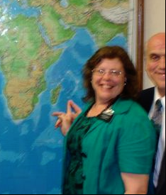
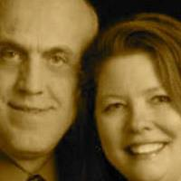

I was raised in an LDS home, where I learned to embrace a life of spirituality and love. My mother, who passed away recently, was a faithful member of the church her entire life, often attending services alone for many years. She earned a bachelor's degree from BYU at age 55 and was always eager to learn and grow. At age 92, she performed, as the star of Gene's Golden Girls who did the splits at the end of the show. She was a remarkable example to me, and I've followed in her footsteps by pursuing my education. I am now just two classes and three online courses away from graduation; I will graduate at 65 and hope to form a non-profit. My father was an exceptionally intelligent man. Although he never completed college, he was always learning and had a remarkable capacity for knowledge. I raised six children to adulthood, and I take pride in the fact that they are contributing members of society. Our life has had its challenges; we moved frequently, which has impacted my children in both positive and negative ways. Currently, I am married to the finest man on the planet! We share a joyous relationship, and I truly believe that this is what God intended for all of us. We served a mission to Mauritius which was the highlight of my life.
 